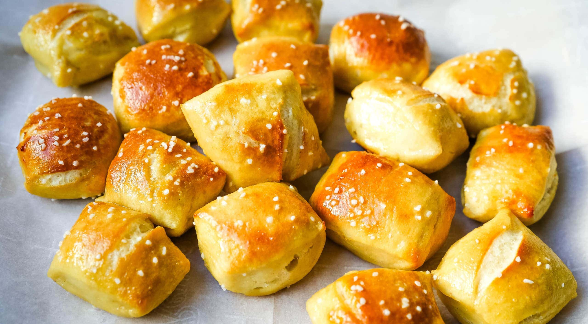

Pretzels

Finished pretzel bites
The recipe consists of pre-made pretzels that have a layer of salt ontop. Then placed in a oven at 300F for 3 minutes. Served with the consumers choice of dipping sauce.
Ingredients
- Regular Pretzels OR Pretzel bites
- Salt doesn't matter which kind
- Dipping Sauce like cheese
Steps
- Place the pretzel bites or regular pretzel in a flat pan
- Sprinkle water on the pretzels
- Sprinkle the desired amount of salt onto pretzels
- Place into oven at 300F for 3 minutes
- After done in oven remove and serve with desired dipping sauce